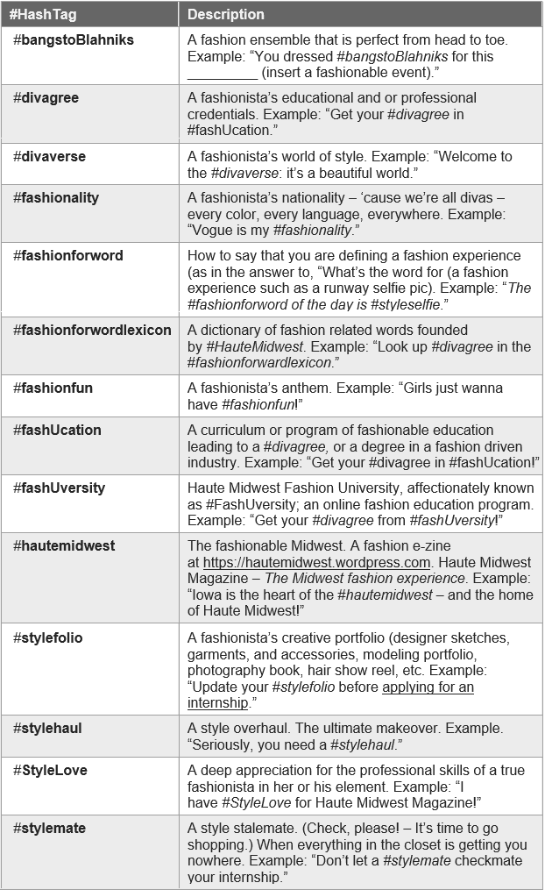

Projects
The latest from my portfolio...


Featured Project Overview: Haute Midwest Magazine
About Haute Midwest Magazine
Haute Midwest Magazine (HM) online is part of Haute Midwest Enterprises family, a division of Sherell Ra Sha Inc. HM is the Official Magazine of Iowa’s premiere fashion house, House of Sherell. We help promote fashion-centered events and foster growth in the Midwest fashion industry.
Shenica R. Graham founded Haute Midwest Magazine with Sponsor, House of Sherell, on November 7, 2013 following her Apparel & Accessory Designer début (collection titled GSIA – now part of GSyndicates) at the House of Sherell Fashion Extravaganza on November 6, 2013. Her lexicographical influence and talent portfolio is driving HM to the top of the fashion u-net-verse. She envisioned the Haute Midwest brand as a multifaceted and growing enterprise. Therefore, this project began as a conglomeration of several projects undertaken at once and spanning all HM divisions.
The How? Haute Midwest Magazine

The website cover / banner shown above is a completely original design. It is an enlarged variation of the first logo that I created for Haute Midwest. How did the design come to fruition?
First, I was thinking about fashion and specifically about fashion shows. I wanted to bring the concept of the “spotlight” to the stage. Next, rotating a letter or a word in a logo name from a horizontal to a vertical orientation (or vice versa) is one of my graphic design trademarks. I have a way of finding just the right element to spin.
For the “Haute Midwest” logo, I chose to rotate the first letter of the second word. Then, I saw the sideways “M” as a model. I could see the model “M” on the catwalk. I chose to add a spotlight to the “M” to further emphasize the LIVE on-stage or in the spotlight fashion relationship. Haute Midwest is now distinguishable by the spotlighted and 45 degree rotated “M.” A brand is born. I really love this design. It just says “lights, camera, action.”
I created several derivative logos featuring the spotlighted and rotated “M,” each representing a different division of Haute Midwest Enterprises.
The WordPress content management system (CMA) was used to create the website. WordPress was used because as a Web and CSS designer with over 9 years experience working in WordPress, I have not found a better, more user-friendly, consistent, reliable CMS.
The site implements the MH Magazine WordPress template (theme). A theme was chosen in order to inherit some magazine-like functionality and to ensure that the required code is in working order before beginning any customizations.
This project required extensive graphic design and content writing including logo and banner / website cover design, marketing and copy writing, blogs, and articles. Shenica Graham wrote 99% of the content including articles and features published to this online fashion magazine, serving as the Editor In Chief. She was also the official photographer for all cover photoshoots with models. A fashion dictionary (shown on this page below the magazine cover photos) was specially curated to add fun to the online content.
Featured Project Element: Magazine Covers

All of the above magazine covers were designed by Shenica Graham. For all except one of the covers (March 2019 apparel by Ra Sha), Shenica designed and constructed the apparel worn by the models. Shenica took the photos and created the cover layouts.
Featured Project Element: Specially Curated Content
The #FashionForWord Lexicon by Shenica R. Graham
The Original Haute Midwest Fashion Dictionary – “Fashion is the word for life in Style!”
My Tupperware Facebook Group
Almond Berry Spinach Salmon Pinwheels

« Join my Tupperware Facebook Group for recipes and more!